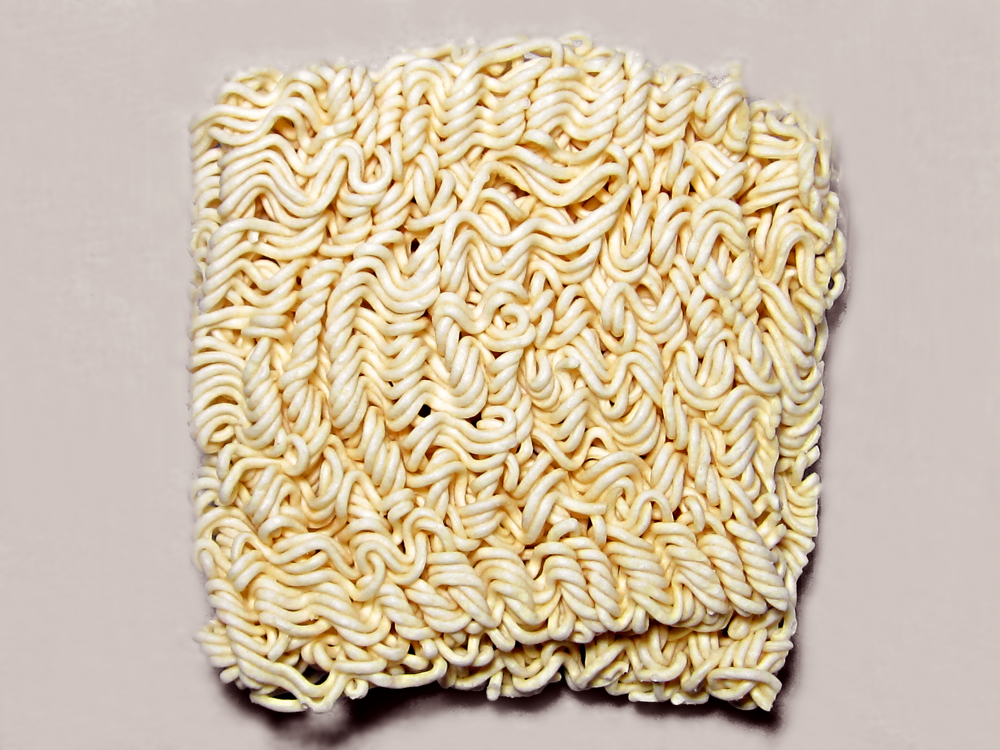

Instant Noodles

Instant noodles are a tasty and fast meal. Despite lacking in nutirtion or staying power, I keep coming back for more of that wonderful taste
Ingredients
- One package instant noodles (any variety will work)
- Water
Steps
- Bring water to a boil
- Take package of noodles, and without breaking the seal, firmly pound it
- The aim here is to break the noodles into managable peices and to speed up the cooking process
- Pour broken noodles into serving bowl
- Some instant noodle packages include a small pouch of seasoning. At this time, remove the pouch, open it, and empty the contents into the serving dish
- Add hot water and wait until noodles are soft, stirring occasionally